Women's March 2018 Poster — "Hope"
SF Zine Fest
Thank you for stopping by my page! I'm a local SF-based artist who makes work that is friendly, energetic, and passionately, unapologetically feminist. I work with tech companies like Slack, Facebook, Apple, as well as in the advertising and editorial spaces with clients like the New York Times, Macy's, and the Yosemite Conservancy, to inject a sense of warmth and play in the form of art into our collaborations.
I've compiled a selection of artwork, zines, and projects that are most relevant to the the work I'd love to show at the SF Zines Fest, and thank you for reading! ♡
Quick Jump: Artwork ✽ Zines ✽ Campaigns (client)
Part of a personal illustration series on embracing my Chinese heritage while growing up in America
From an illustration series for Airbnb — "Nova"
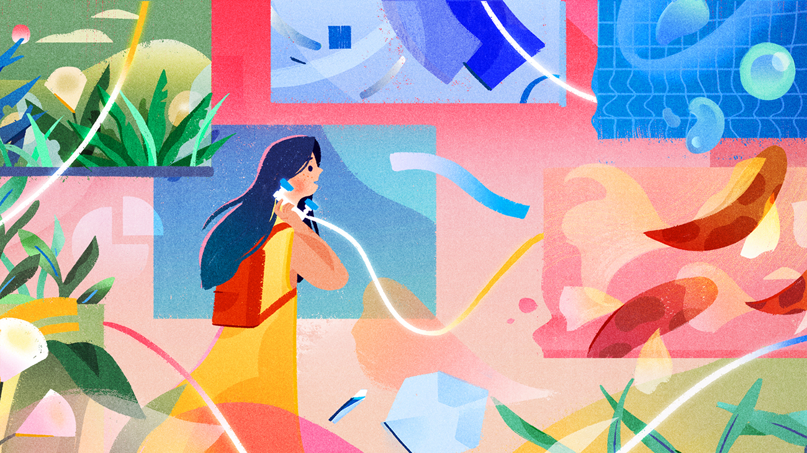 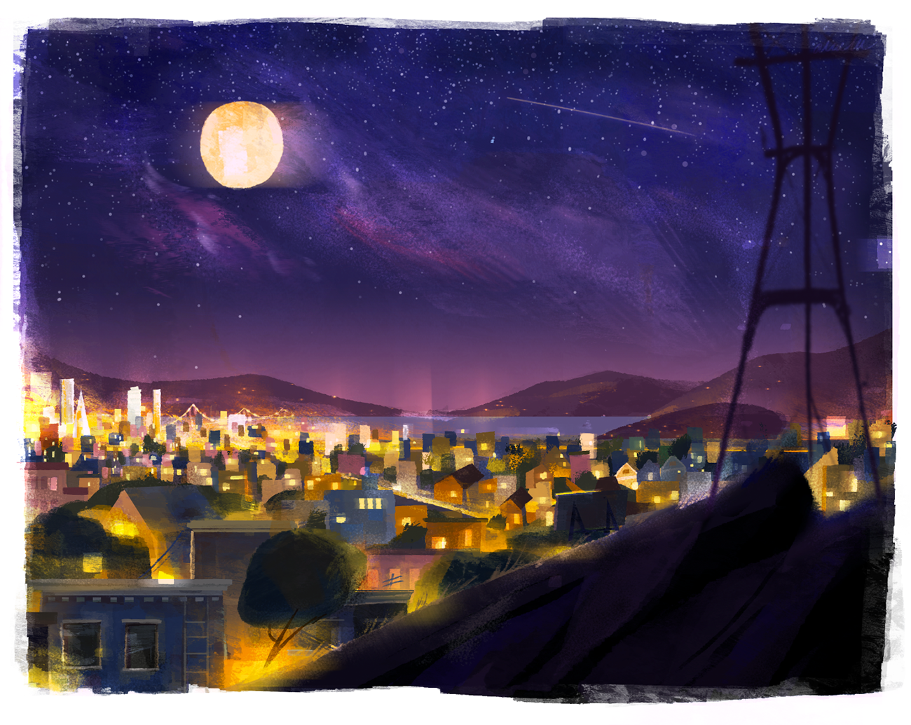 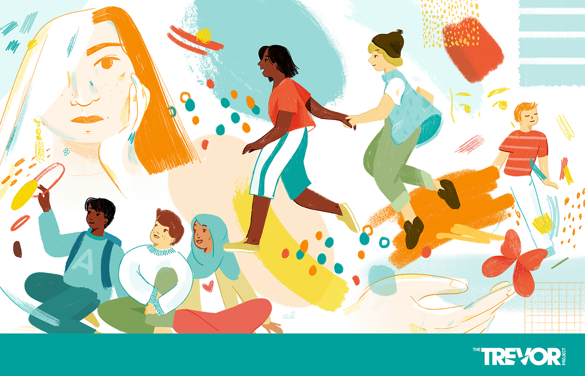Illustration for The Trevor Project's new initiative, TrevorSpace — Creating a safe space for teens online
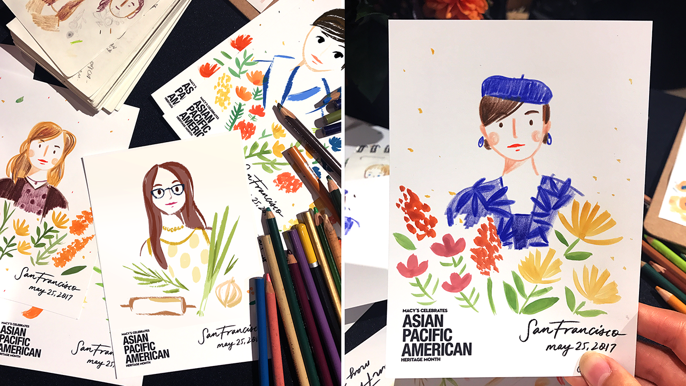I was honored to create these illustrations and do live art for Macy's Asian American Pacific Month celebrations
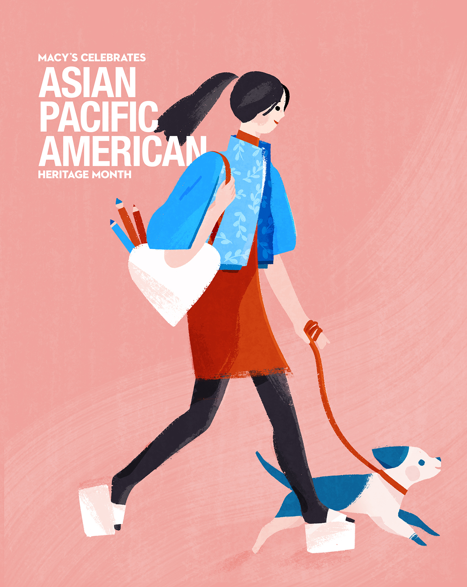Zines
I write zines about my personal experiences, from my lens as an Asian American first generation female, with the aim of both sharing my culture and prompting open and accepting dialogue about our shared cultural experiences in general! I want to share stories and adventures in an accessible, fun way, as I think that that's one of the most powerful ways to connect with others culturally and share our different viewpoints. Below are a few excerpts from some zines I've created about my love for Chinatown, NYC, as well as my experiences as an artist-in-residence in Yosemite National Park. My zines also have an interactive component, with pages that prompt readers to fill in and storyboard moments from their own life.
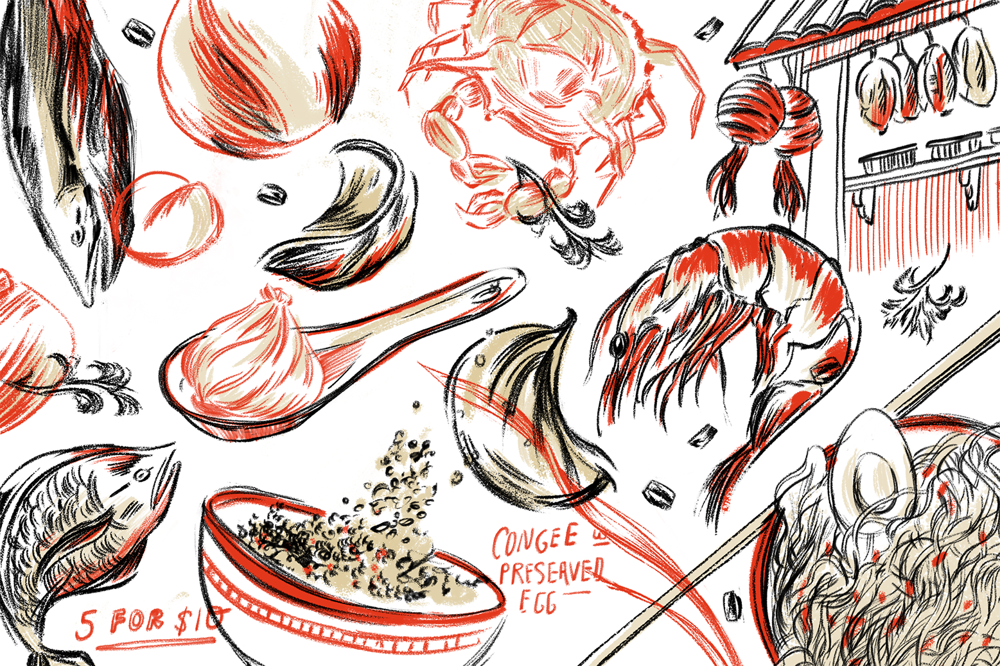
Campaigns (Client)
A selection of larger illustration projects I've had the pleasure of working on with clients like Slack, Postmates, etc. An important aspect to everything I draw is that it must be inclusive and diverse — particularly because my work is very character-driven. I take this very seriously, and hopefully it is reflected in the work that you see below.
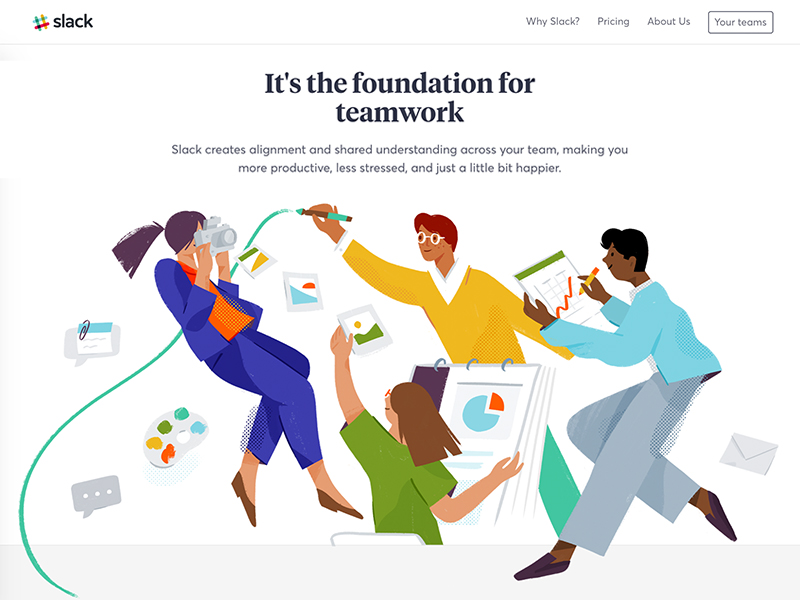 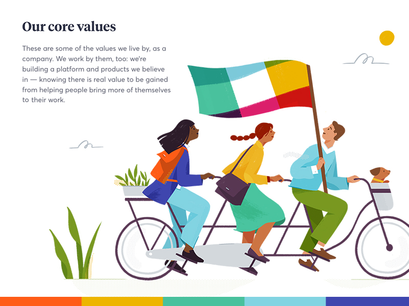30+ website illustrations for Slack — view live on slack.com.


Slack editorial illustrations — for more, see my full library here.
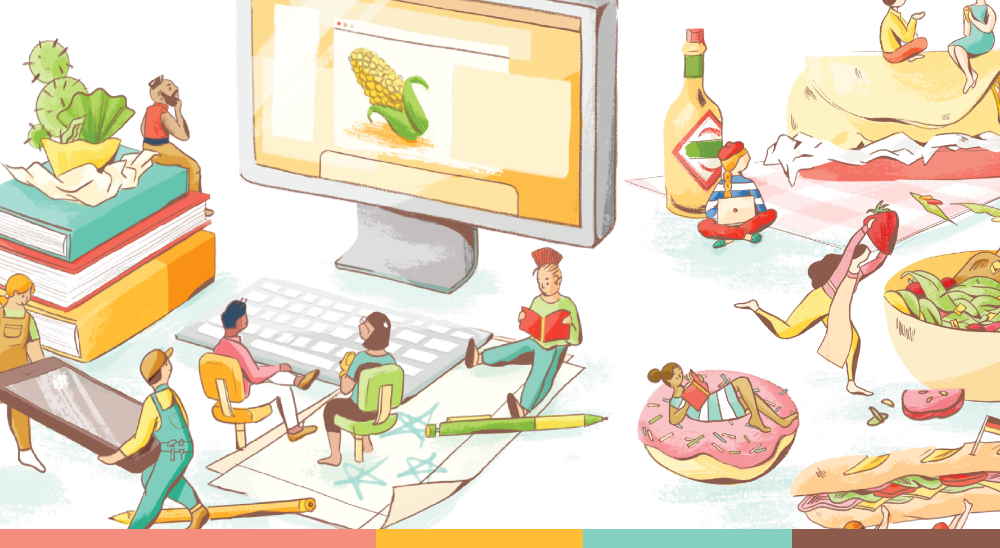Illustrations for Postmates
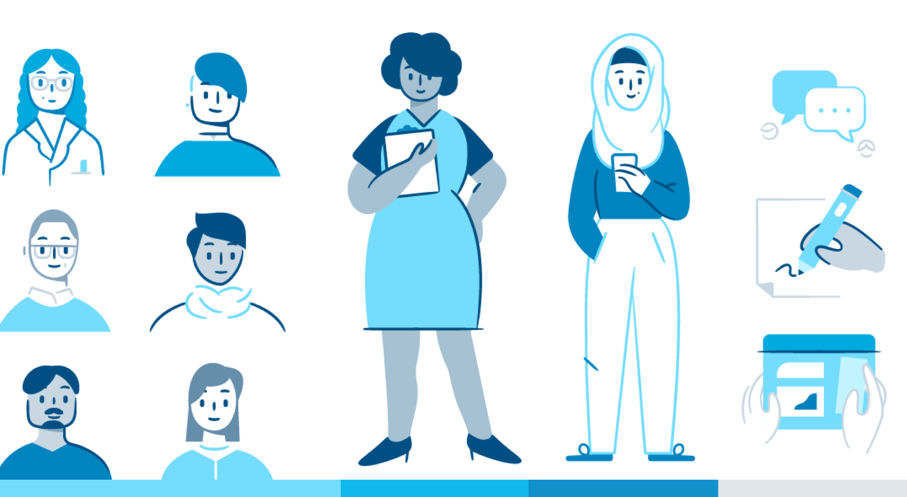Creating an inclusive illustration identity for WordPress.com — read the case study here.
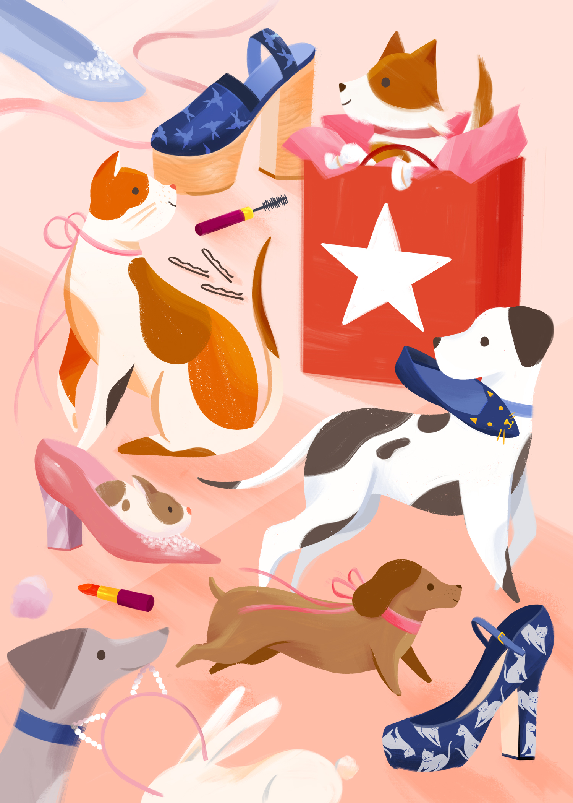Illustration for Macy's 2017 Holiday Windows card.
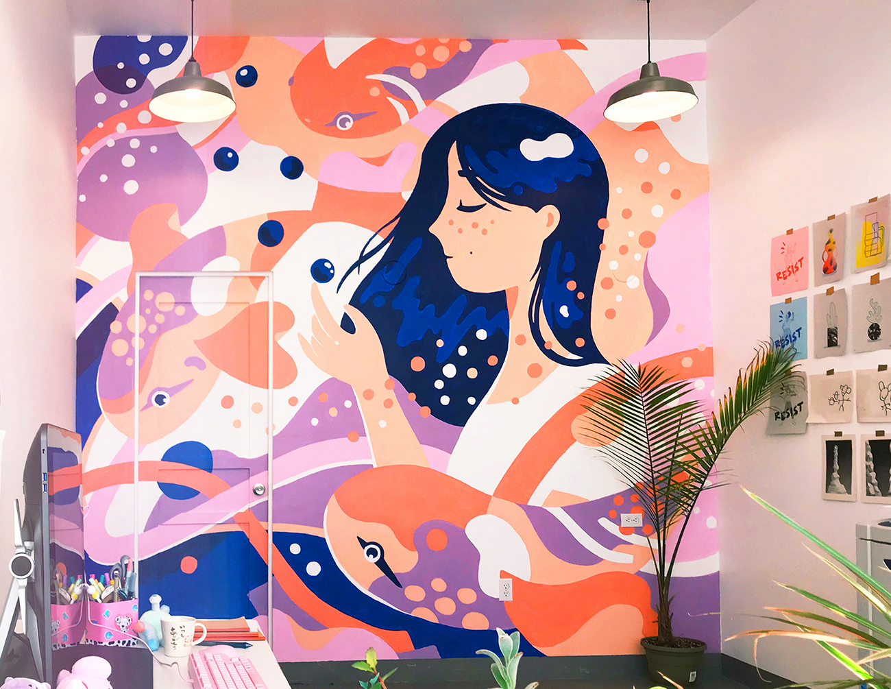Massive mural painted in my art studio, in the Mission. I'd love to create a large-scale piece to put on display at the Zine Fest if accepted!
Thank you for reading, and have a nice day! ☀
If you have any q's, don't hesitate to contact me! If want to see more work, you can view the rest of my site or my Instagram.